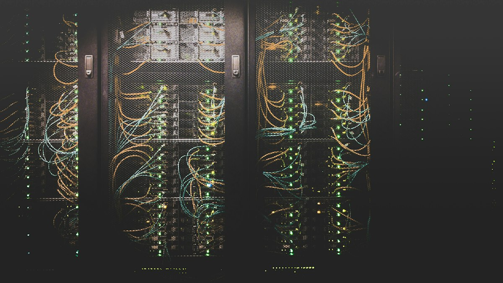

About the platform
A remote device management system built to push software, firmware, and configuration updates to distributed devices without physical access — designed for IoT fleets from industrial sensors and smart meters to cameras, locks, and edge gateways.
Architecture centers on three components: a cloud management portal for releases and deployments, a central server that stores packages and orchestrates distribution, and a lightweight client agent on each device that polls securely over HTTPS, downloads updates, and applies them with fail-safe modules — no open inbound ports on the device.
The challenge
Manually updating devices in the field is slow, costly, and error-prone. Technicians visit units one by one, critical security patches are delayed, and version drift across large fleets becomes inevitable. Organizations need discovery, staged releases, confident deployment, and automatic recovery when something fails.
How updates flow
Filter and identify devices that need updates by type, version, group, or health.
Prepare code and artifacts — packages, libraries, full images, and containers.
Schedule installs with fail-safes, phased rollouts, pre-condition scripts, and rollback.
Monitor status in real time, confirm success, and keep an audit trail.

Capabilities
Full device lifecycle
Impact
Deployment moved from days of field visits to minutes of controlled rollout. Fail-safe A/B updates reduced bricked-device risk. Fleet security improved because patches ship as soon as they are ready — with continuous visibility into health and versions.
Industries & use cases
Smart security cameras, parking and smart-city systems, utility smart meters, wearable health monitors, industrial cameras, and smart-home devices such as locks — anywhere devices are numerous, remote, or costly to service on-site.